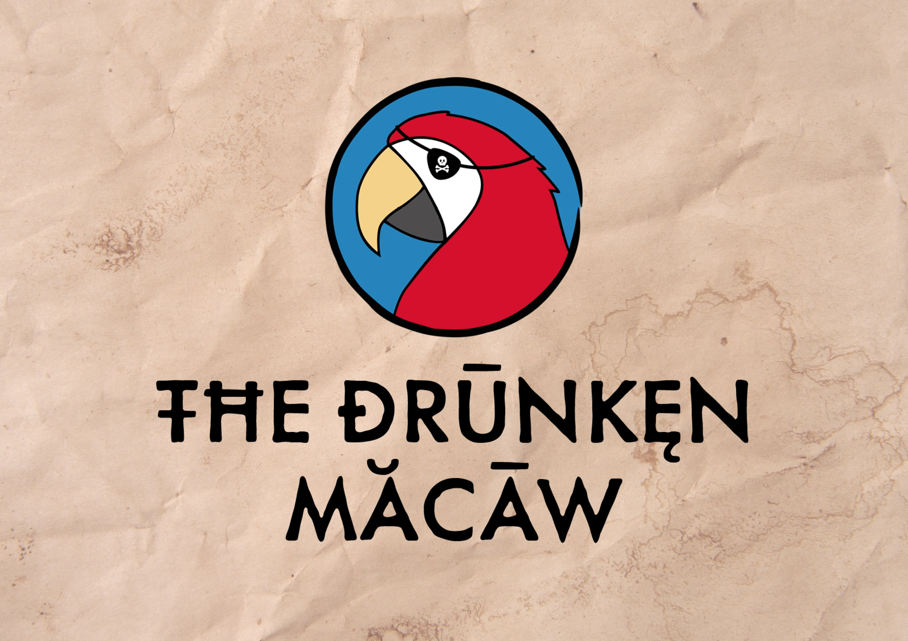
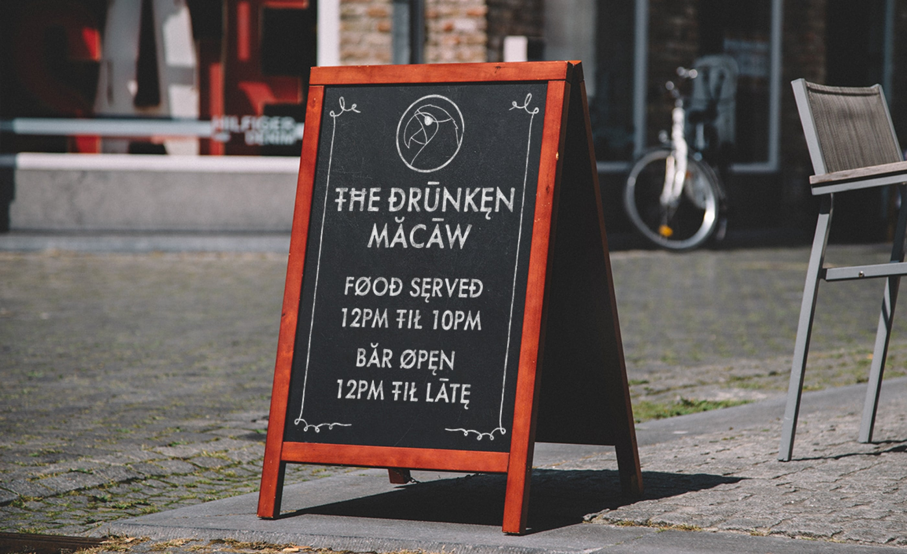
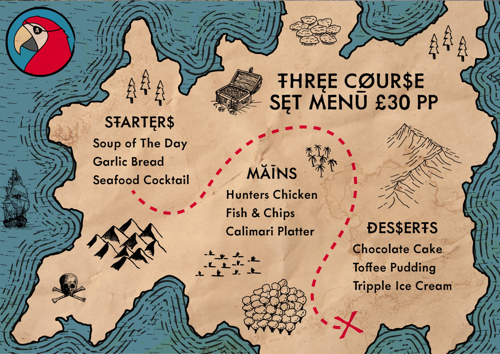
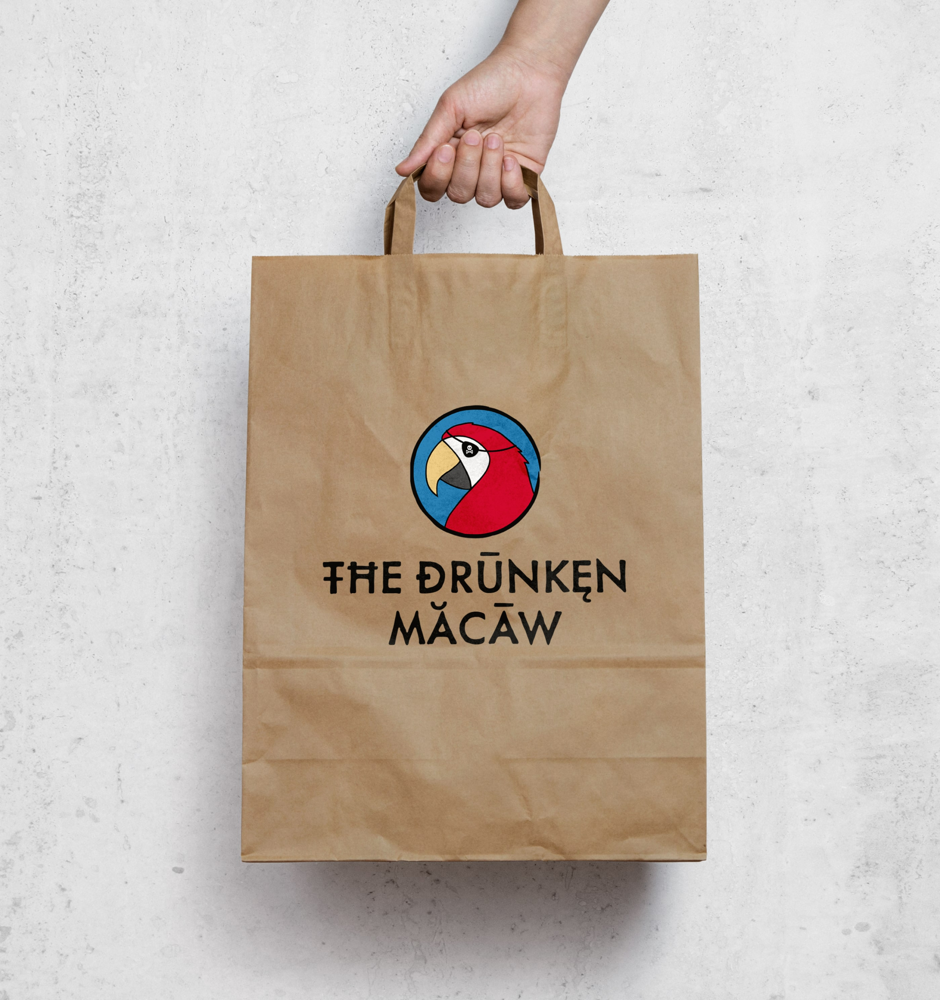
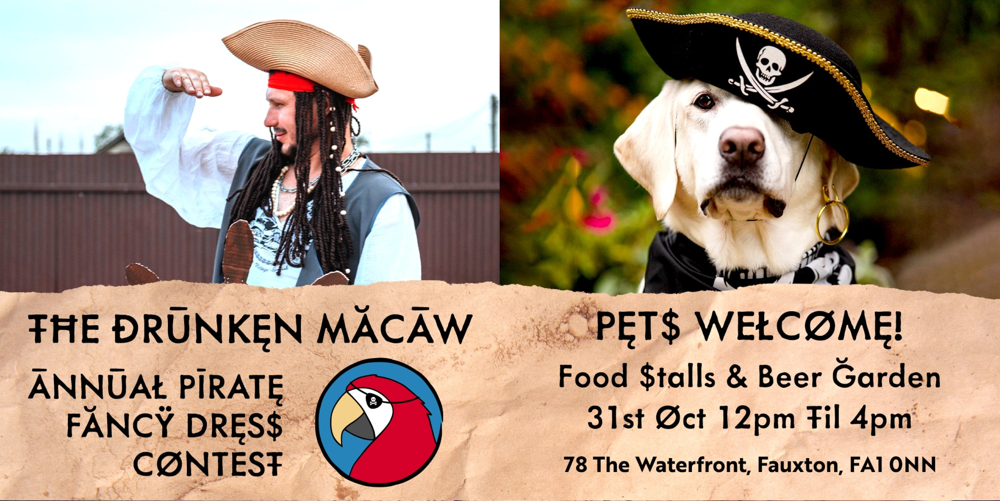
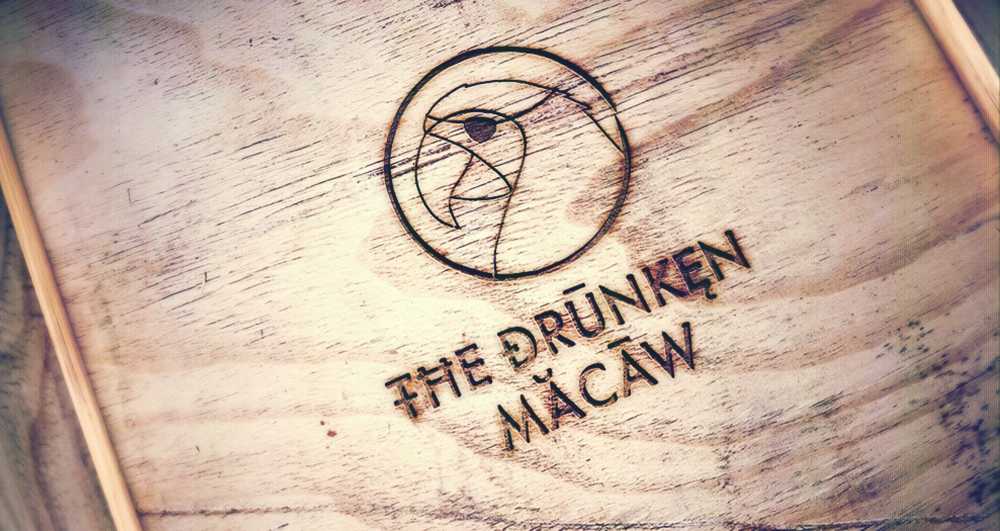

The Drunken Macaw
Project Type: Branding | Logo | Social Media
Problem to Solve: The Drunken Macaw is an upcoming pirate themed restaurant and bar,
Hoping to provide premium themed dining and party experiences. A strong brand identity was requested that
matched the
pirate theme. The main aim of the brand is to be as shareable on social media as possible. A mascot style logo
was also
requested as the target audience is both families for the restaurant and young adults for the bar.
Key Words: Pirate | Shareable | Fun | Whimsical | Premium






Say Hey